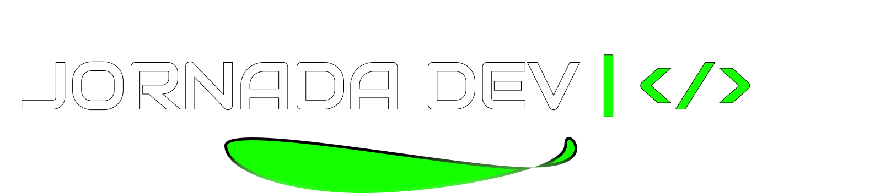
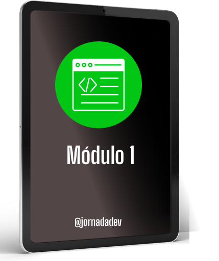
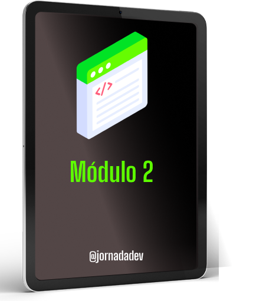
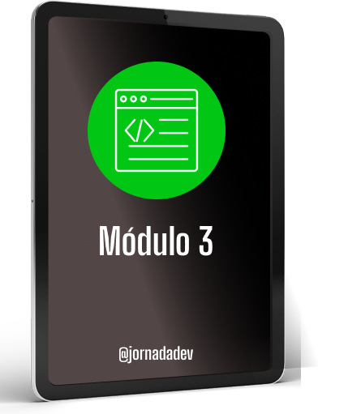

Jornada Dev: aprendizado prático, orientação e uma trilha para quem quer construir seu caminho na programação.
Prévia de redesign · identidade original preservada
Uma apresentação mais clara do programa, com tipografia forte, espaços bem definidos e a identidade verde-lima que já fazia parte do seu site.
Uma jornada estruturada para transformar conhecimento em projetos.
Mentoria e orientação para organizar seu desenvolvimento.
Mostre o que você sabe fazer com resultados concretos.
Uma experiência próxima e humana, sem o excesso de efeitos visuais que faz tantos sites parecerem iguais.
Imagens originais dos módulos, com apresentação mais limpa e organizada.


